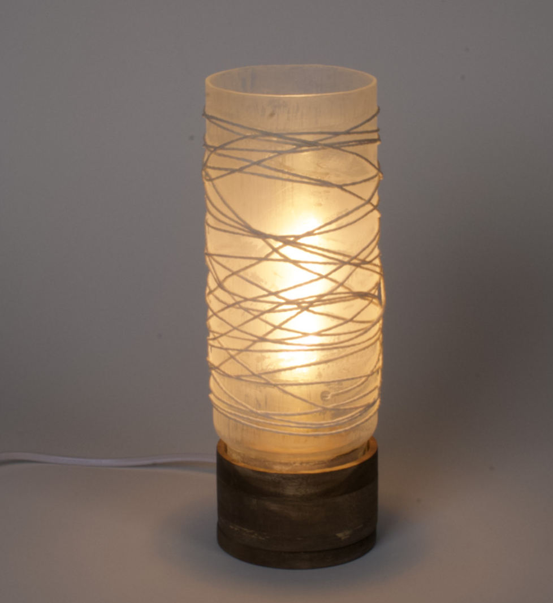
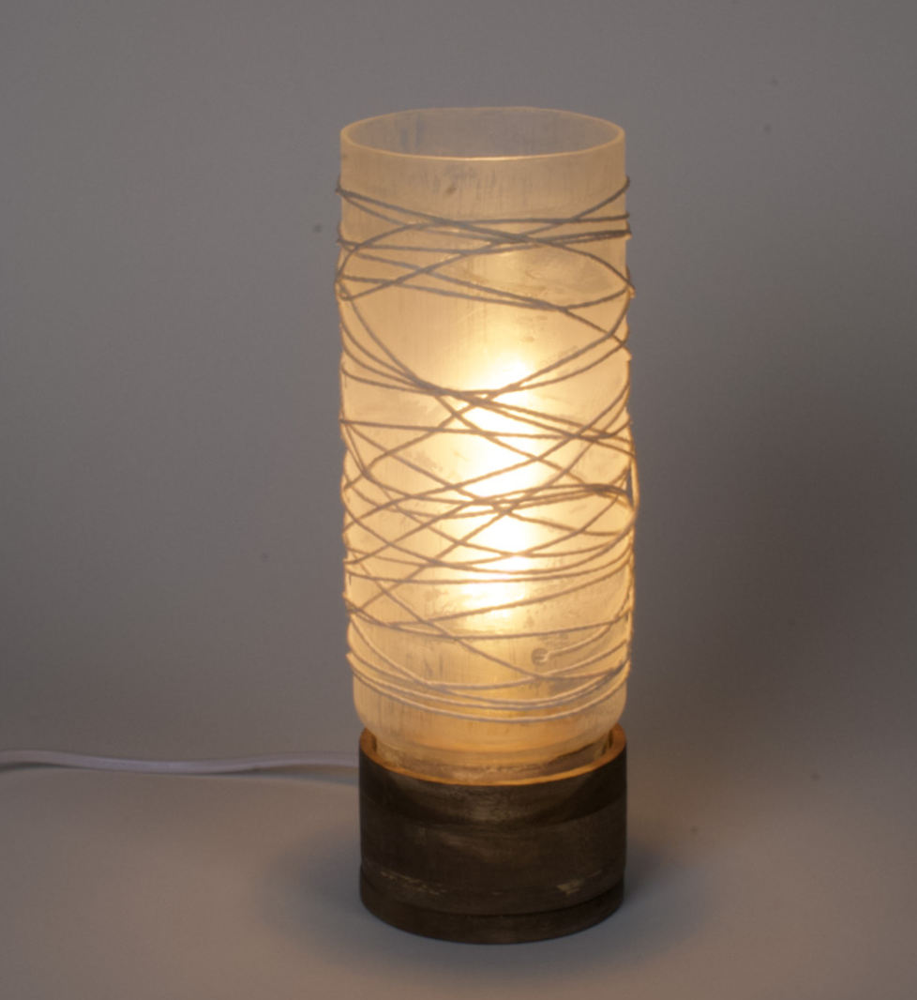

This lamp draws inspiration from a serene, rustic aesthetic. It seeks to strike a harmonious balance between light and shadow, achieved through a darker base stain and the delicate touch of cream twine elegantly adorning the opaque glass.

 
